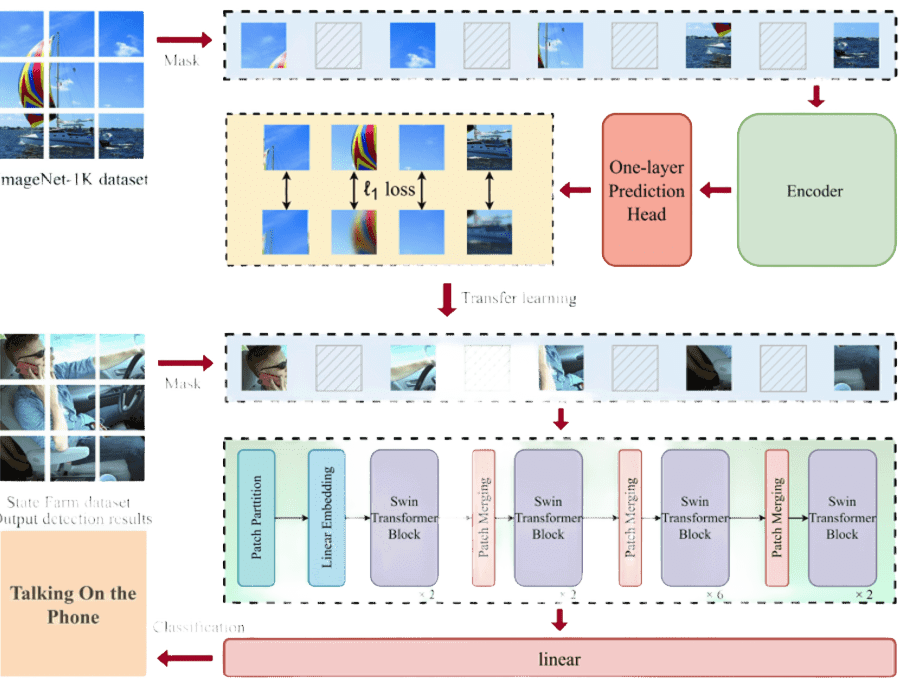
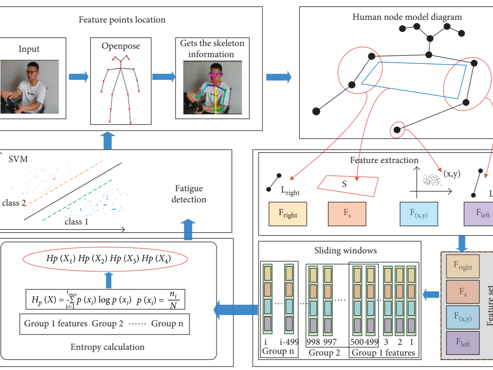
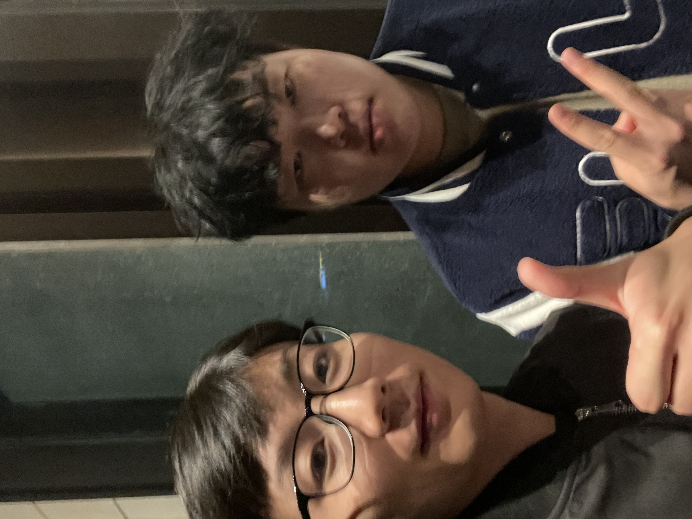
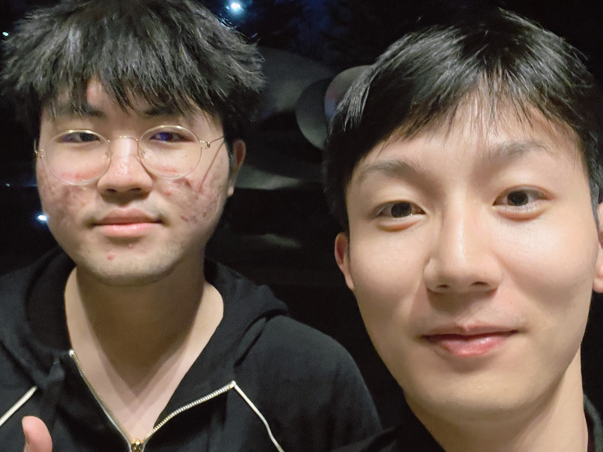
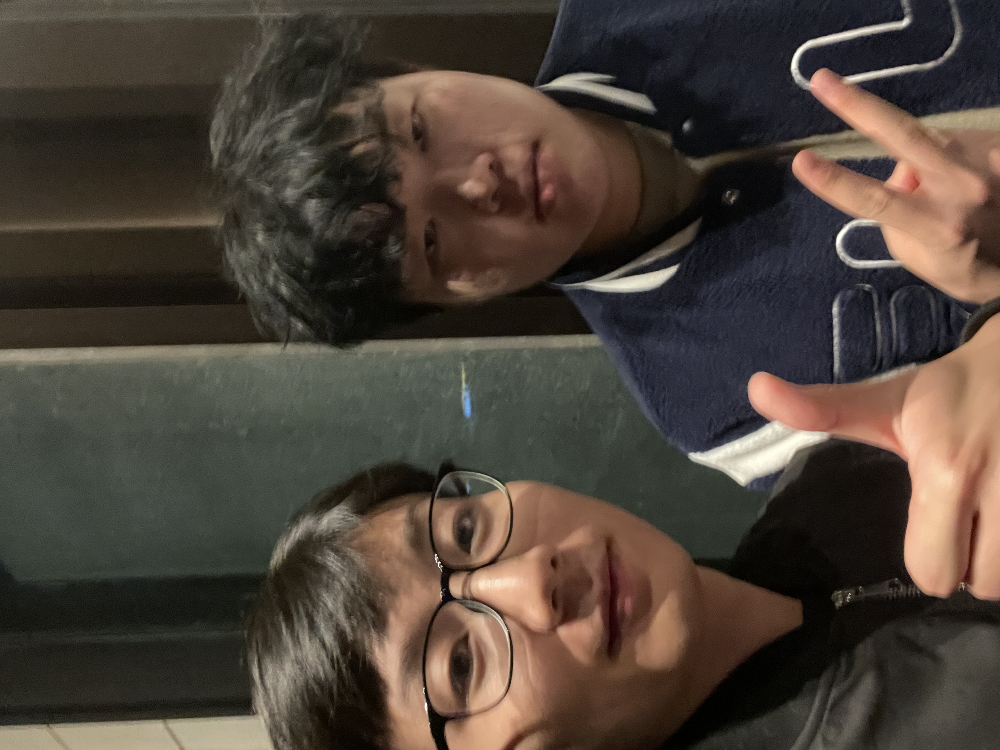
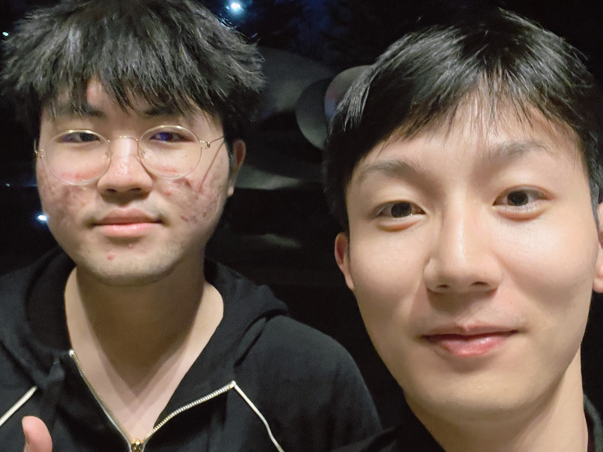

Publications
† equal contribution, * corresponding author



AB-DLM: An Improved Deep Learning Model Based on Attention Mechanism and BiFPN for Driver Distraction Behavior Detection
IEEE Access, 2022

Driver Fatigue Detection Method Based on Human Pose Information Entropy
Journal of Advanced Transportation, 2022

 


